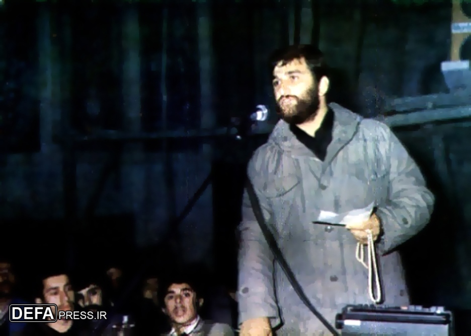
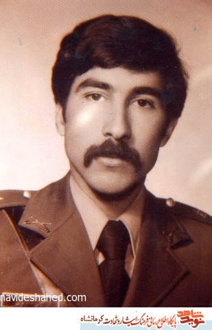
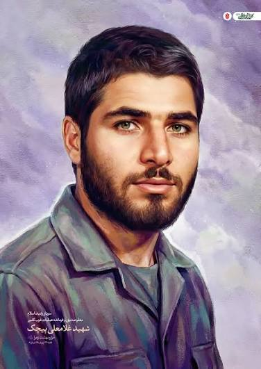
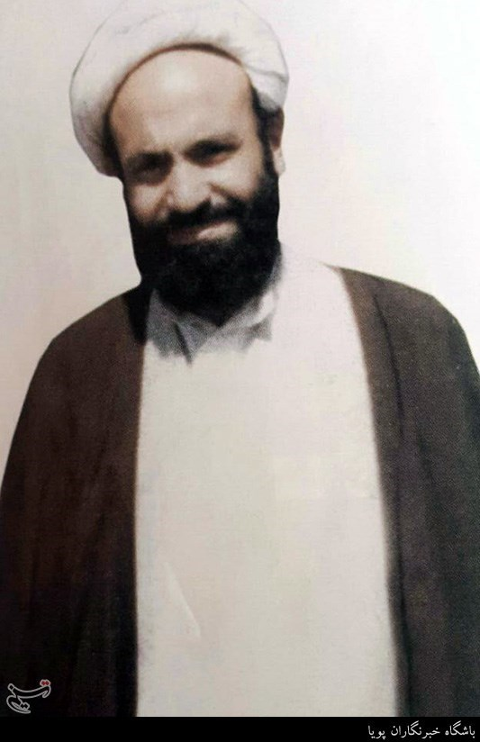
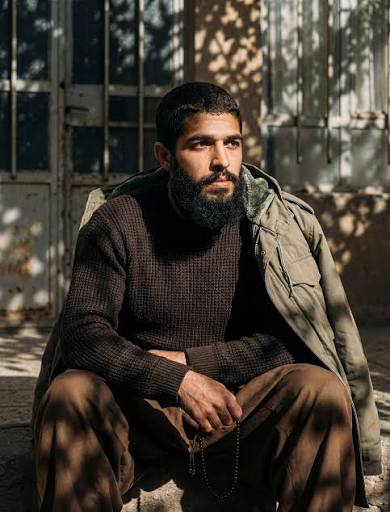
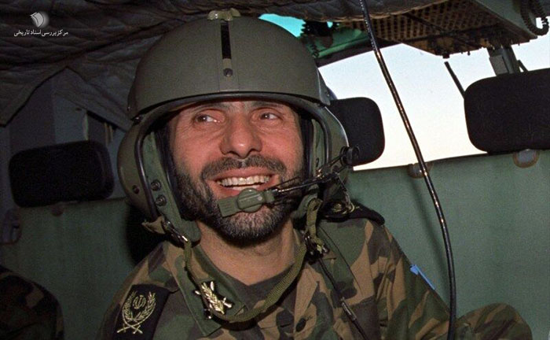
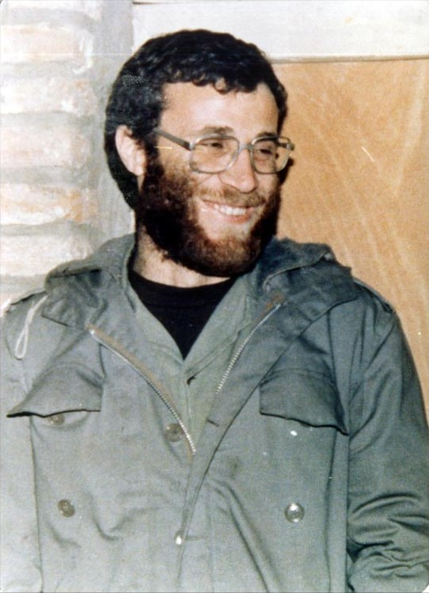
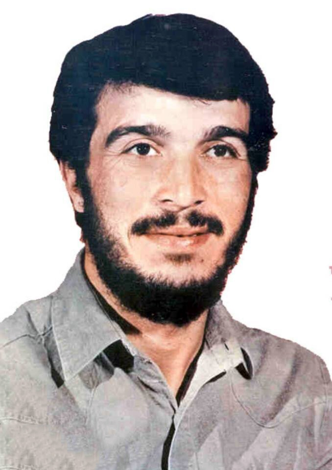
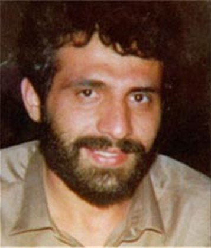

عکس آرشیویعلیاکبر شیرودی
علیاکبر شیرودی
شهدای عملیات غربخلبان هوانیروز ارتش؛ از چهرههای شناختهشده نبردهای منطقه بازیدراز.
آرشیوی برای معرفی شهدایی که در عملیاتها و نبردهای جبهه غرب کشور به شهادت رسیدند؛ در کنار چهرههایی که به درخواست مخاطبان، پرونده مستقل در این مجموعه دارند.

خلبان هوانیروز ارتش؛ از چهرههای شناختهشده نبردهای منطقه بازیدراز.

از شهدای عملیات بازیدراز؛ نام او در روایتهای مربوط به این عملیات ثبت شده است.

فرمانده سپاه سرپلذهاب و واحد عملیات غرب؛ در عملیات مطلعالفجر به شهادت رسید.

روحانی و دیدهبان عملیات بازیدراز؛ در مرحله دوم عملیات به شهادت رسید.

از نیروهای بسیجی و ورزشکار؛ در عملیات والفجر مقدماتی در منطقه فکه مفقودالاثر شد.

فرمانده ارشد ارتش؛ در جبهه غرب و عملیات مرصاد نقش داشت. شهادت او در تهران و در سال ۱۳۷۸ رخ داد.

از فرماندهان سپاه در غرب و کردستان؛ در محور مهاباد–نقده به شهادت رسید.

فرمانده تیپ ویژه شهدا؛ در عملیات کربلای ۲ در منطقه حاجعمران به شهادت رسید.

از فرماندهان سپاه در پاوه و کردستان؛ در محور پیرانشهر–سردشت به شهادت رسید.
پایگاه دارای فهرست اسامی و اطلاعات شهدای عملیات مرصاد؛ برای استخراج و تطبیق اسامی باید رکوردها بهصورت کامل بررسی شوند.
مشاهده فهرست مرصاددر این سند پژوهشی به شهادت حسین ادیبان و علیاکبر شیرودی در بازیدراز و شهادت غلامعلی پیچک در عملیات مطلعالفجر اشاره شده است.
مشاهده سند پژوهشیدر این گزارش به شهید محمود غفاری و چند تن دیگر از شهدای مرحله دوم بازیدراز اشاره شده است.
مشاهده گزارشتصاویر این وبسایت باید از آرشیوهای رسمی بنیاد شهید، ارتش، سپاه، مرکز اسناد دفاع مقدس یا خانواده شهدا دریافت و با منبع و مجوز انتشار ثبت شوند.
پرونده تفصیلی، اسناد و تصویر آرشیوی پس از بررسی منبع به این بخش افزوده میشود.